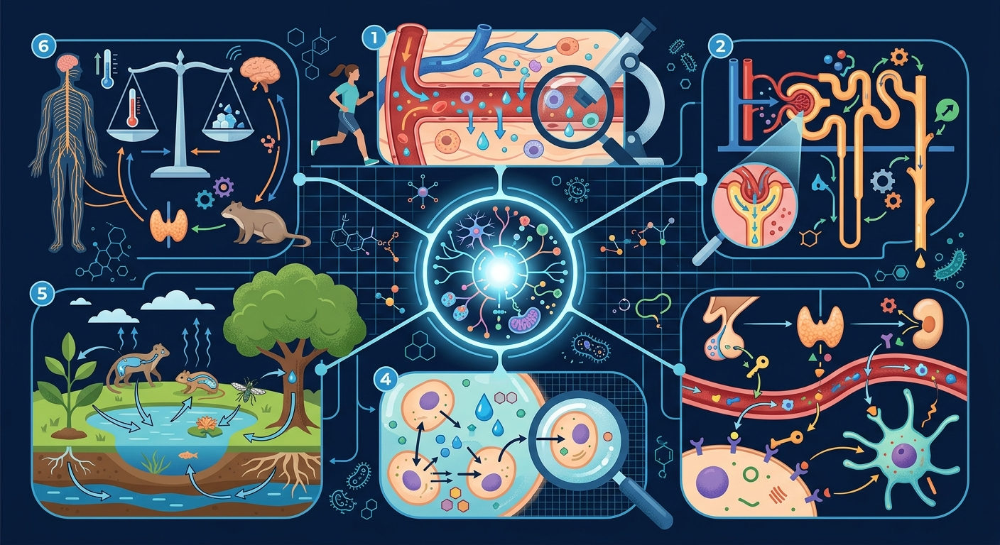
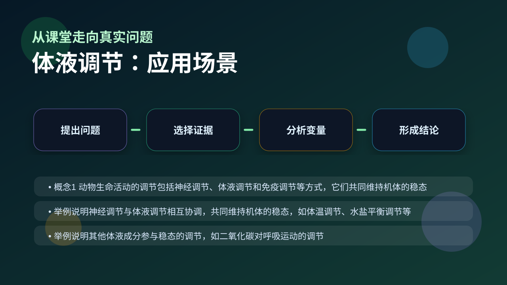

Gallery v1.0.0 · skill v7.14
机体怎样通过反馈调节维持内环境稳定？

已经知道：此前已学过内分泌腺（如胰岛）分泌激素（如胰岛素、胰高血糖素）调节血糖，且知道激素通过血液循环运输（人教版八下§7.1）
但问题是：学生常混淆激素调节与神经调节的速度差异，难以理解同种激素（如肾上腺素）如何在体液/神经调节中扮演不同角色，对负反馈（如血糖平衡）的动态过程缺乏直观认识
所以学：当运动员赛前出现心慌手抖时，需通过分析其肾上腺素分泌路径（神经-体液双重调节）和血糖波动曲线，判断这是应激反应还是低血糖症状
先选一个卡点。后面的例子、互动和 AI 学伴都会围绕它给你最小提示。
选择或输入后，本课会围绕你的问题展开。
寒冷时人体通过哪种方式快速增加产热？
现象入口：饭后血糖升高会促进胰岛素分泌，运动或饥饿时胰高血糖素作用增强。
机制解释：体液调节通过激素等化学信息分子经体液运输作用于靶细胞，常与神经调节协同。
证据抓手：证据来自激素浓度变化、靶器官响应和负反馈曲线。
变量线索：激素浓度、受体数量、靶细胞状态和反馈环节。做题时先找变量，再判断机制，最后写证据。
观察甲状腺激素分泌轴：下丘脑→垂体→甲状腺的层级控制
分解负反馈过程：甲状腺激素如何抑制促甲状腺激素释放
阐明激素特异性：只有靶细胞表面有相应受体才能响应
应用反馈机制解释糖尿病患者胰岛素注射原理
情境：甲状腺激素分泌受下丘脑—垂体—甲状腺轴调节。
作答路径：寒冷刺激→下丘脑释放TRH→垂体释放TSH→甲状腺分泌甲状腺激素→促进产热；当血液中甲状腺激素浓度过高时，负反馈抑制TRH和TSH分泌，维持激素水平稳定
评分提醒：典型失分：混淆激素运输方式（需体液运输）与作用特点（靶向性），或遗漏反馈调节中‘抑制上两级’的关键环节
旋转 3D 分子模型，观察结构层级。请把结构特点和 体液调节 中的功能解释对应起来：结构不是装饰，而是功能的证据。
💡 操作提示：拖拽旋转模型，思考“形状、空间位置、结合位点”如何影响生命活动。
寒冷刺激下丘脑→垂体→甲状腺逐级放大，甲状腺激素升高提高代谢；激素过多又负反馈抑制上级腺体。
💡 探究任务：调寒冷刺激强度和负反馈灵敏度，观察激素水平如何“冲上去又压回来”，解释甲亢患者反馈失调。
认为激素越多越好，忽略反馈调节和靶细胞受体。
只说“增加/减少”不够，要写清改变的是 激素浓度、受体数量、靶细胞状态和反馈环节 中的哪一个。
没有实验现象、曲线趋势或结构证据，答案就像猜测。
下列哪种物质传递信息的方式属于体液调节？
视频用语音和动态画面回顾本课主线：问题情境 → 机制模型 → 证据判断 → 迁移应用。

分析生长、代谢和水盐平衡题，要画出激素来源、运输和靶器官。
提交后会检查你的解释是否包含现象、机制和变量。
如果学生只说出概念名称，继续追问：题干里哪个证据最关键？这个证据对应分子、细胞、个体还是生态系统层级？如果改变 激素浓度、受体数量、靶细胞状态和反馈环节 中的一个条件，结果会怎样？这三问能把答案从背诵推进到科学解释。
列举三种通过体液运输的激素及其靶器官
分析运动员注射睾酮后为何需监测垂体促性腺激素水平
设计实验验证胰岛素对血糖的调节存在负反馈机制
关于激素调节特点的叙述，正确的是？
学习小结：体液调节通过下丘脑-垂体-靶腺轴分级调控，以负反馈维持激素稳态，如甲状腺激素抑制促激素释放
先独立作答，再点选项查看对错与错因。
下列哪种激素直接参与调节人体水盐平衡？
剧烈运动后最科学的补水方式是？
当血浆渗透压升高时，机体的反应是？
肾上腺皮质分泌的____激素能促进肾小管对Na+的重吸收。
答案：醛固酮
醛固酮属于盐皮质激素，参与电解质平衡调节
当人体失水过多时，垂体后叶释放的____会增加。
答案：抗利尿激素
该激素能减少尿液排出，维持体液平衡
设计实验比较一次性饮水和分次饮水对排尿的影响
❓ 为什么我运动完特别渴，但喝水后反而更想尿尿？
❓ 激素和神经调节到底谁更厉害？
❓ 糖尿病打胰岛素为啥不能口服？
学完这一课，这些问题你都能自信地回答。
✅ 固醇类（如性激素）和氨基酸衍生物（如甲状腺激素）也是激素
💡 教材案例多举胰岛素等蛋白质激素
✅ 抗利尿激素管水（增加肾小管吸水），醛固酮管盐（保钠排钾）
💡 两者都影响尿量但机制不同
口诀：激素走血不神经，靶向传递保平衡
类比：像小区广播系统，物业（内分泌腺）发通知，住户（靶细胞）选择性接收